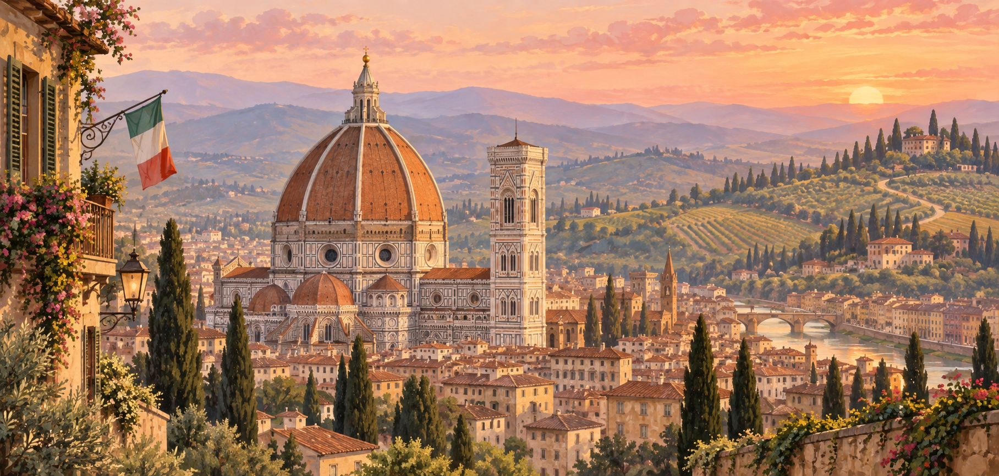
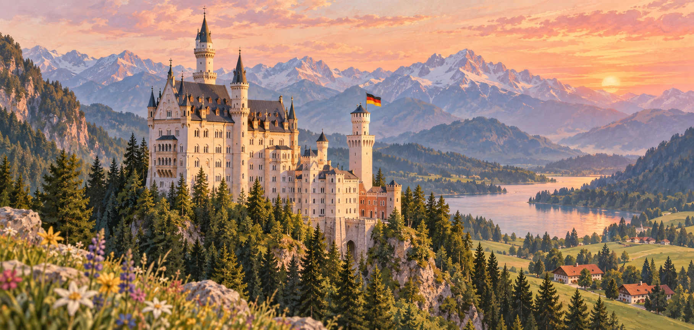

Tuscany, Italy
Florence Duomo · Tuscan hills · Italian tricolor
A regional fallback combines a recognizable landmark, scenery the region is famous for, and a subtle national flag in the same pastel design language.

Florence Duomo · Tuscan hills · Italian tricolor

Neuschwanstein Castle · Bavarian Alps · German flag
No matching destinations.